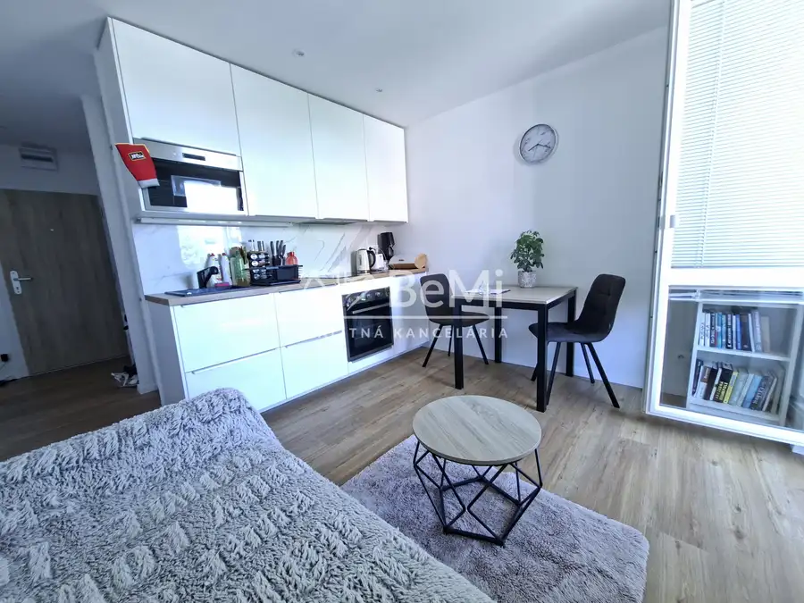
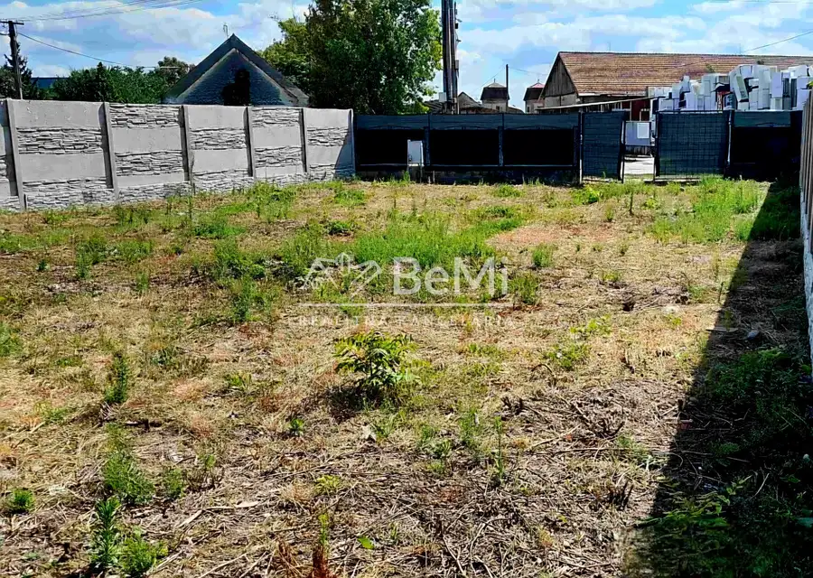
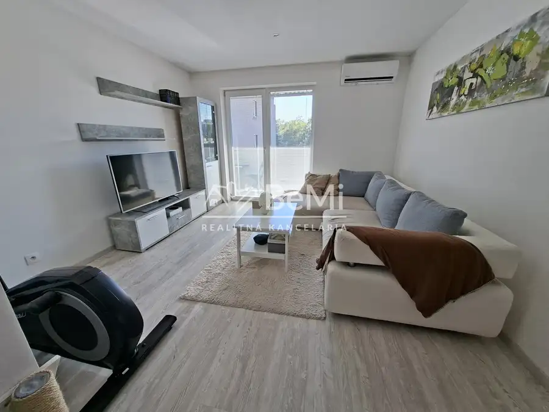

Prevádzkové/skladové priestory vo Veľkých Úľanoch 004-18-NIBA
Veľké Úľany
- StavČiastočná rekonštrukcia
- VlastníctvoOsobné
O nehnuteľnosti
Na predaj priestranný a plne vybavený, zabehnutý autoservis, schválený na opravu nákladných, dodávkových aj osobných vozidiel.Priestor je vhodný aj na využitie ako skladový priestor alebo kombináciu servisu a skladu.Objekt sa nachádza v súkromnom uzavretom dvore, v ktorom pôsobí viacero firiem.Parametre a vybavenie:Celková výmera: 1 728 m²Servisná časť: cca 600 m²Budova pozostáva z 5 miestností (možnosť ich prepojenia)Kancelárie, bývalý obchod s tovarom a sociálne zázemie sú súčasťou objektuZdviháky pre osobné aj nákladné vozidláMontážne jamyRôzne stroje a zariadenia pre servisné práceVeľké množstvo náhradných dielov (možnosť taktiež odkúpiť)Zabezpečovací a kamerový systémSchválený pre servis a opravy všetkých typov vozidielMožnosť prispôsobiť priestor podľa potreby (servis, sklad, kombinácia)Výhody:Okamžite využiteľný – bez nutnosti veľkých úpravKvalitne vybavený servis šetrí počiatočné investícieVariabilné priestory vhodné pre rôzne typy podnikaniaBezpečný a priestranný objekt s dostatočným zázemím Výborná poloha – Bratislava 40 km, Senec 19 km, Galanta 16 kmDobrá dostupnosť pre zákazníkov aj dopravnú technikuSúkromný dvor – bezpečné a uzavreté prostredie Viac informácií – po dohode na mieste. NAŠE CENY SÚ VRÁTANE PROVÍZIE ZA KOMPLETNÝ SERVIS A SÚ SCHVÁLENÉ MAJITEĽOM.Eva Baloghová, tel. č.0907982913, email:baloghova@realitybemi.sk.
Parametre
| Druh | Skladový objekt |
|---|---|
| Dátum zverejnenia | 5. 10. 2025 |
| Odpadové vody | Na pozemku - Žumpa |
| Stav nehnuteľnosti | Čiastočná rekonštrukcia |
| Typ | Predaj |
| Vlastníctvo | Osobné |
| Vykurovanie | Lokálne |
| Úžitková plocha | 0 m² |
Kde to je


Mohlo by Vás zaujímať

BytNové10 147 000 €1 izbový byt v Šenkviciach kompletne prerobený 040-113-EVBA Trnava 1-izbový39.11 m² Znížená cenaNa predaj kompletne zrekonštruovaný 1-izbový byt s balkónomPonúkame na predaj kompletne zrekonštruovaný 1-izbový byt s výmerou 39,11 m²,…
PozemokNové8 39 000 €Slnečný pozemok - Sládkovičovo - 328 m2 ID 012-14-NIBA Sládkovičovo 📍 Na predaj pozemok v Sládkovičove – ideálny na realizáciu podľa vlastných predstávPozemok o výmere 328 m², nachádzajúci sa v meste Sládkovičovo, na…
BytNové10 149 000 €Na predaj – útulný 2-izbový byt v skvelej lokalite v Seredi id 050-113-evba Sereď 2-izbový41 m²2. podlažie 🏡 NA PREDAJ – ÚTULNÝ 2-IZBOVÝ BYT V SKVELEJ LOKALITE V SEREDI 050-113-EVBAHľadáte štartovacie bývanie, investičný byt alebo útulný byt bez nutnosti…